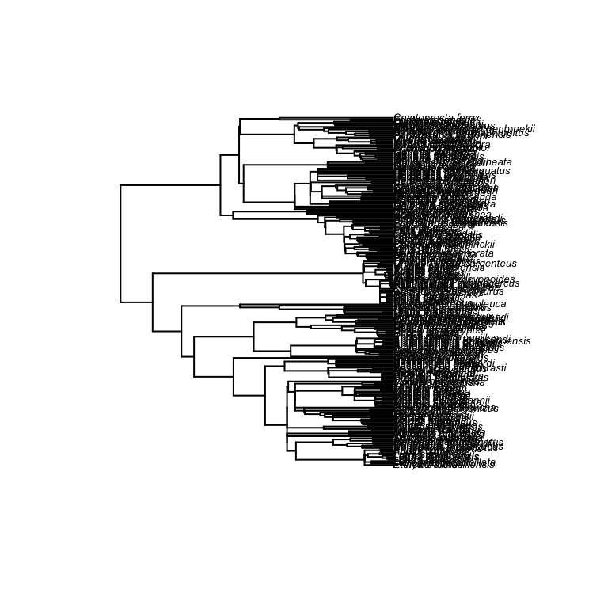

All organisms descend from a common ancestor. Therefore, their relationships can be represented hierarchically in the form of a tree. A phylogeny is simply the representation of evolutionary relationships between species (or higher taxonomic groups) in the form of this tree structure (Figure below).
Phylogenetic trees have two types of nodes; internal nodes, which represent speciation events, and terminal nodes, which represent the species themselves. Terminal nodes are also commonly referred to as tips. Nodes are joined together by edges, whose length can be arbitrary or can represent time (e.g. millions of years). The term branch is normally used for the tree edge and the descendent subtree, while the term subtree refers to the internal node and its descendents together.
Ideally phylogenies will be strictly dichotomous (i.e. each internal node represents a splitting into two clades), however, when the tree is poorly resolved, there may be more than one branch emerging from a single speciation event (this is called a polytomy). Often, the analytical methods used require a strictly dichotomous tree, so the polytomies must be resolved to be dichotomies (this is usually done randomly, and there is an R function to do it).
The phylogeny is typically constructed using genetic data (e.g., from sequence data), or with morphological data, or a combination of both. Node ages are often deduced using a molecular clock method, which may be calibrated using fossil data. Sometimes the topology of the tree can be altered or constrained with ``expert opinion’’. It is not uncommon to find several plausible trees for the same groups of species and, in the case of Bayesian tree construction methods, there may be many dozens of equally plausible posterior trees. These approaches are outside the scope of this workshop, but suffice to say, the phylogeny is itself a model, and, like any model, is almost certainly incorrect!
So, in the following phylogeny you can see that A and B are more closely related to eachother than A is to C.

Evolutionary biologists have produced a number of models that characterise the evolution of traits through time (see the figure below). For the time being we will focus solely on continuous traits such as body mass or skeletal size etc. The most important models are probably the following three:
Brownian motion (BM): The BM model is the simplest. This model assumes that, through time, traits evolve via a random walk process. In this model there is no optimum value for the trait, and there are no processes (e.g. selection) that influence the trait value. Variation is unbounded and accumulates linearly as a function of time, and the expected difference in trait value (i.e. the mean value) is zero.
Ornstein-Uhlenbeck (OU): The OU model is derived from the Brownian motion model, but has an additional “constraint parameter” (
α
), which pulls the trait value towards the long term mean. This mean can be conceptualised as the optimum value for a particular trait. The result of this model is a much more bounded set of trait values, but again, the mean trait value is zero. When α is 0, the model is equivalent to the BM model. Strong OU signal could be indicative of stabilising selection.
Early Burst (EB): The EB model is also derived from the Brownian motion model, and is sometimes termed the ACDC model (short for Accelerating/Decelerating). Like the OU model, this model includes an extra parameter (r) which describes how the rate of evolution changes exponentially through time. The result is that, when r is negative, the evolution of a continuous trait takes place rapidly at first, and decelerates with time (conversely, when r is positive, rates accelerate). When r is 0, the model is equivalent to the BM model. This model, when r is negative, would be like an adaptive radiation into a fixed number of niches.
When conducting phylogenetic analyses, it is a good idea to bear in mind that you are assuming a model of trait evolution, and that your assumptions may not be incorrect. Furthermore, an often overlooked point, is that phylogenetic signal will arise even with a stochastic model (e.g. Brownian motion model), and some mode of evolution can act to obscure signal.

This plot shows simulations of continuous trait evolution under Brownian motion (BM) (grey), Ornstein-Uhlenbeck (OU) (red), and Early Burst (EB) (blue) models. The OU \alpha value is set to -0.1, and the EB r value is set to -0.2 while the mean and standard deviation for all three models were set to 0 and 1 respectively. There are 50 simulations per model.
From these simple models it should become apparent to you that the reason that closely related species tend to have mode similar trait values than distantly related species is because there has not been much time for divergence to occur since speciation. However, after some more thought it should also become apparent that the similarity of the traits could depend on the mode of evolution. For example, under the OU model, the effect of branch length on variance dies out after a short time, and so the traits can be quite similar to each other, even after a long divergence time.